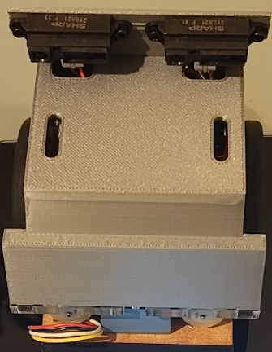
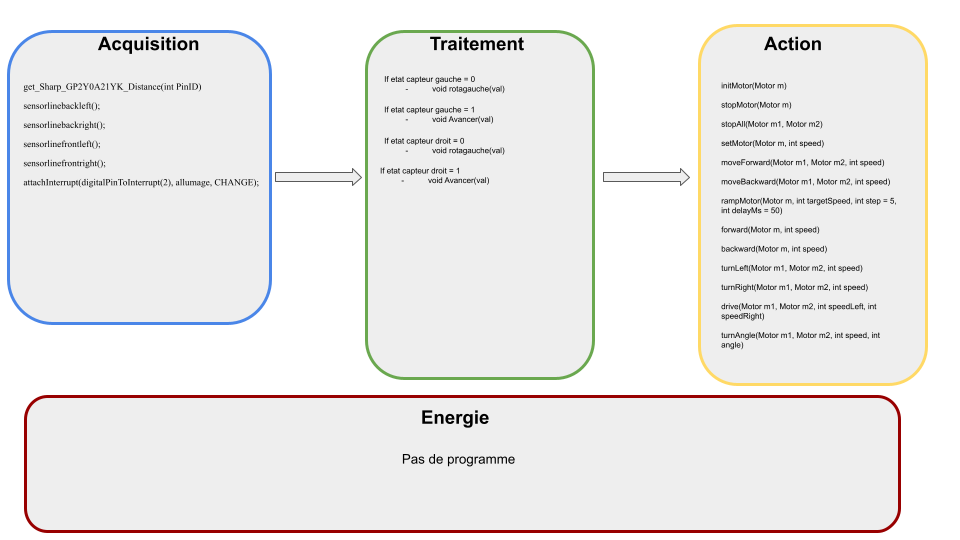
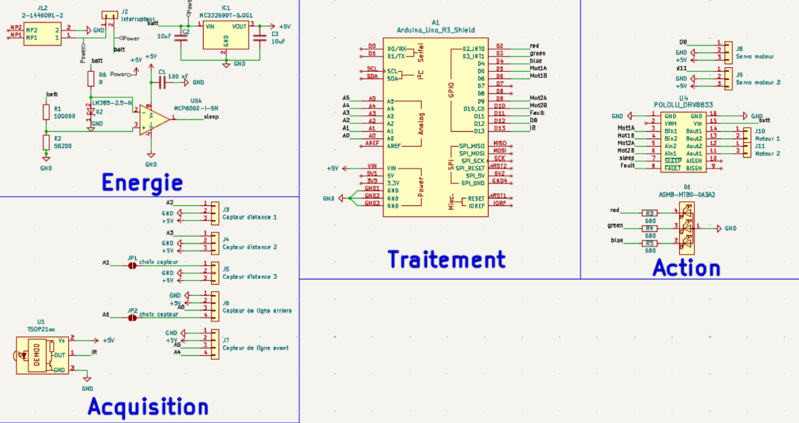

Réalisation du robot
Pour réaliser ce projet, il nous a été fournis un cahier des charges auquel le produit devait strictement correspondre
L'objectif de ce projet était la réalisation d'un robot sumo. Il devait étre capable de mener un combat s'inspirant des combats de sumo. Les deux robot sont placés cote à cote sur une arène et doivent pousser le robot adverse hors de l'arène.
1 - Conception préliminaire
La première étape, la conception préliminaire, consiste à identifier les éléments constituant les 4 blocs suivants :
- Acquisition
- Traitement
- Action
- Energie
Les composants présent dans ces quatres parties sont des composants permettant de remplir les exigences du cahier des charges.
Il se peut que le carte électronique finale ne conserve pas tout les composants retenu ou voie apparaitre de nouveaux composant
La conception préliminaire constitue une ebauche des solutions possible correspondant au exigence du cahier des charges
Nous réalisons donc le schema suivant :

Nous allons maintenant voir ensemble l'utilité des composants mentionné dans le schema.
Pour marquer le debut du combat, l'arbitre appuie sur un bouton d'une télécommande fonctionnant en infrarouge. C'est pour cela que nous avons choisis un capteur d'onde infrarouge. Lorsque le signal de debut de combat sera recus, notre robot pourra attaquer le robot adversaire
Afin que notre robot puisse detecter son adversaire, nous avons retenus, dans un premier temps deux type de capteur, leur difference reside dans leur distance maximun de detections. Leur technologie sont similaire, une led infrarouge emet un signal puis calcule le temps qu'il met a revenir, nous connaissons la vitesse de deplacement d'une onde infrarouge, nous pouvons donc en déduire la distance a laquelle se trouve le robot adversaire. (Par exemple, si on marche 30 min à 10 km/h alors nous aurons parcourus 5 km) Finalement, nous avons eliminer un type de capteur car sa distance de détéction était trop élevé, il aurait donc était perturber par des éléments au abord de l'arène.
D'après le cahier des charges, pour ne pas perdre le combat, le robot ne doit pas sortir de l'arène, c'est pour cela que nous avons séléctionner deux capteurs optique capable de differencier le noir et le blanc. Ils ont donc pour objectif de detecter les lignes blanches délimitant l'arène sur laquelle les robot s'affrontent, puisqu'elle est noir au centre et entouré de blanc. Cela permettra donc au robot, via le programme, de ne pas sortir de l'arène.
Tous les composants cité precedemment constitue la parties d'acquisition d'information de notre robot. Elle peut ètre vu comme les "yeux" du robot
D'après le schema ci-dessus, nous observons que le coeur de traitement sera, imposé par le cahier des charges, un microcontroleur Arduino Uno. La carte que nous allons fabriquer
viendra s'y connecter. L'arduino est un microcontroleur, c'est lui qui va commander le robot selon le code
que nous allons lui implanter. En d'autre terme, il est le "cerveau" du robot.
Le cahier des charges stipule que le robot doit étre autonomme en énergie pour une durée minimun de 15 min, pour respecter cette
exigence, nous avons séléctionner une batterie de 800 mAh. D'après les calculs préliminaire de consommation électrique du robot,
cette valeur suffira.
Une exigence demande que, si la batterie est décharger, donc, si sa tension est trop faible, les moteurs du robot s'éteigne automatiquement. Pour ce faire, nous utilisons
une référence de tension, c'est un composant capable de donner une tension fixe, peut importe la tension qui l'alimente. Nous comparons ensuite
cette tension avec celle de la batterie a l'aide d'un comparateur, ce composant va produire une tension tant que celle de la
batterie est suprérieur a celle de la référence de tension, sinon il ne produira rien. Nous connectons ce comparateur a une broche du pont en H (voir explication de la partie action),
Ce composant dispose d'une broche qui, lorsqu'elle recoit un signal, coupe l'alimentation des moteurs.
La batterie sélectionnée, lorsqu'elle est pleinement chargée, produit une tension de 7,4 V. Hors certains composant que nous
avons séléctionner supporte au maximun 5 V, afin de ne pas les endommager, nous devons donc réduire la tension qui leur arrive.
C'est le rôle du régulateur linéaire, lorsqu'il est alimenté par la batterie, il produit 5 V de tension de sortie, permettant de n'endommager aucun des composants présent
sur la carte.
Nous choisisons un interrupteur afin de pouvoir alimenter ou non le robot. Cet interrupteur est bistable, cela signifie qu'il
a deux positions, alimenté ou non.
Afin de permettre au robot de se mouvoir, le cahier des charges nous imposes deux motoréducteur. Un motoréducteur
est un moteur associé à sa "boite de vitesse" permetant de decupler sont couple.
Afin d'alimenter et controler les moteurs, nous utilisons deux pont en H. Avec le microcontroleur, nous commandons le pont en H, qui commande ensuite
les moteurs. Cela permet d'alimenter les moteurs, mais aussi de commander leur sens de fonctionnement, horaire ou anti-horaire.
Sur le même principe, nous réalisons cette étude pour la partie informatique. Nous procédont à une analyse permettant de definir quelle fonction informatique permettra de respecter le cahier des charges. Nous en déduisons le schéma suivant :

Dans la partie acquisition sont répértorié les fonctions qui nous permettrons de lire les valeurs revoyées par les capteurs (Présence ou non de ligne
sous les capteur de ligne et distance avec l'adversaire)
Dans la partie traitement, les fonctions qui permettront de prendre des décisions en fonction des informations capteurs. Par exemple, nous allons mettre
dans cette partie la condition suivante : si la ligne blanche delimitant l'arène se trouve à l'arrière du robot, alors il doit avancer.
La partie Action répertorie quand à elle les fontions qui permettrons de mettre en marche les moteurs (en avant ou en arrière).
La partie énergie ne necessite pas de code car la solution séléctionner est exempte de logiciel, elle est donc purement matérielle.
2 - Conception détailler
Après avoir fait cette étude, nous réalisons la conception détailler. Pour ce faire nous reprenons les éléments de la conception préliminaire que nous dévellopons, comment allons-nous relier les composants entre eux, quel valeur de résistance est nécéssaire, tout ce que nous devons faire pour que la carte soit fonctionnelle. Nous procédont également a l'élaboration du schema électrique ainsi que le schema de routage representant les pistes de la carte électronique.
Schéma électrique

Dans un premier temps, nous allons voir les modifications qui ont été apporter entre la conception preliminaire et la conceptions
détailler. Ensuite nous expliqueront de manière plus appronfondies les élément constituant la carte
Modification
Dans la partie acquisition, nous avons donc decider de mettre deux capteur d'adversaire afin d'élargir le champs de détections de notre robot. Nous n'avons pas apporter d'autre modification a cette partie.
La partie traitement, étant imposer par le cahier des charges, n'a pas recu de modification. Nous conservons donc le microcontroleur arduino uno.
Nous n'avons apporter aucune modification a la partie énergie
La partie action comporte quelque modification, nous avons ajouter une led RGB(elle est donc capable de generer toute les couleurs) qui permet de nous donner des informations sur l'etat du robot, nous avions attribuer le vert clignotant lorsqu'il attent le signal de l'arbitre, le vert fixe lorsqu'il l'a recu et qu'il combat. Nous avons sélectionner une led RGB afin d'avoir un maximun de possibiliter pour permettre des améliorations futur. Nous avions également prevus, comme amélioration futur, d'installer une fourche a l'avant du robot afin de soulever l'adversaire pour le faire tomber de l'arène plus aisément. Ce pourquoi, nous avons des connecteurs supplémentaire afin d'y connecter les servo-moteurs permettant le relevage de la fourche. Nous n'avons malheureusement pas eu le temps de mettre en oeuvre cette amélioration
Explication
La partie traitement ne contient que le microcontroleur. Nous pouvons voir sur le schema toute les connections établie entre le microcontroleur et les autres composants.
Les broches affiché "analog" sont des broches capable de recevoir des données analogique, donc des données pouvant prendre une infinité de valeur, c'est pour cela que les capteurs de distance y sont connectés.
L'alimentation électrique se fait par un batterie, celle-ci, comme demander dans le cahier des charges, est protéger par un système
que nous avons choisi qui est purement matériel. Elle est composé du comparateur, representer par un triangle sur le schema. Celui ci dispose de 5 broches dont deux broche d'alimentation.
la référence de tension est représenter par un triangle avec un symbole sur la pointe, c'est ce composant qui stabilise la broche - à 2,5 V. Nous pouvons voir que la broche + est connecter a un pont diviseur de tension, les deux rectangle représente des résistances.
Le but est d'abaisser les tension qui arrive a la broche +. Nous avons calculer les valeurs de resistance de manière a ce que, quand la batterie est à XX de tension cela corresponde a 2,5 V, si la tension de la batterie continue de diminuer, la tension arrivant a la broche diminura elle aussi également. Comme la tension au plus sera inférieur a celle au moins, le comparateur ne renverra rien, il est connecter a
une broche du pont en H qui lorsqu'elle ne recoit rien coupe l'alimentation des moteurs. Sur l'alimentation de ce composant et de celle du regulateur linéaire
(le rectangle en haut a droite de la partie acquisition) nous observons la présence de condensateur (C1, C2 et C3). Leur objectif est de "lisser" la tension d'alimentation à 5V, ce sont de petites batterie
capable de se charger et se decharger tres rapidement. lorsque la tension augmente, il se charge puis lorsqu'il y a une chute de tension, il se decharge, relevant ainsi la tension d'alimentation.
//Inserer ici schema pont en H// Je vais ici faire une explication sur le fonctionnement du pont H car c'est un composant essentiel au fonctionnement du robot.
Comme nous pouvons le voir sur le schema, un pont en H est composé de quatre interrupteur(S1, S2, S3, S4). Les moteurs électrique tel que ce que nous utilisons peuvent tourner dans les deux sens de rotation, il suffit d'inverser le branchement.
c'est le role du pont en H, en effet, si S1 et S4 sont fermer et S2 et S3 ouvert alors le courant va passer comme le tracer de la ligne verte. A l'inverse, si S2 et S3 sont fermer alors le courant va passer comme sur la ligne rouge. Le composant que nous utilisons permet de faire ca en le commandant par logiciel.
Le composant D1 est une led RGB (Red, Green, Blue) elle peut generer du rouge, du vert, du bleu, et tout leur mélange, elle peut donc generer toute les couleurs existante. Dans son fonctionnement, elle est assimilable a trois led en une. c'est pour cela qu'elle a quatre broches, une masse commune et trois broches d'alimentations
Conception informatique
Lors de la conception informatique, nous avons compiler les fonctions précédemment cité dans l'architecture informatique afin de donner au robot le comportement souhaité. Nous
avons donc décider de faire en sorte que notre robot contourne l'adversaire afin de le pousser de coté, ainsi, le robot adverse ne peut pas lutter car il n'a pas de moteur dans ce sens
pour contrer notre poussé.
En parralèle de toute la partie de conception, nous rédigeont le dossier de conception détaillant tous les choix technique que nous
avons fait et pourquoi nous les avons fait.
Le dossier de conception est disponible ici.
3-Fabrication de la carte
Afin de fabriquer notre carte électronique, il a été nécessaire de rediger un document répértoriant l'ensemble des documents nécéssaire, le schema électrique, le plan de routage de chaque face de la carte, le schema d'implantation de chaque face, le plan de percage, ainsi que la nomenclature.
Le plan de routage represente les pistes de cuivre reliant les composants entre eux. Le schema d'implantation represente le positionnement des composants sur la carte électronique. Le plan de percage qui représente tous les endroits ou il faudrat percer la carte, avec les diamètres des trous à faire
Le plan de routage n'est pas a l'endroit afin d'imprimer les pistes dans le bon sens lorsque les schemas (servant de masque) seront collé au circuit imprimé vierge
Le dossier de fabrication est disponible ici.
4-Verification de la carte
Maintenant que nous avons fabriquer la carte, nous devons nous assurer que toute les exigences formulé par le client sont réspecter, ce pourquoi nous rédigeont un dossier de verification. Il contient chaque teste réaliser et le resultat associé.
Dans un premier temps, nous avons vérifier les exigences mécanique (dimension, masse, ect). Le robot devait avoir des dimensions inférieur à 100 mm de largeur et 100 mm de longueur. Afin de vérifier cette exigence, l'équipe enseignante nous a mis a disposition un gabarit. Si le robot rentre dedans alors il est conforme.
Notre robot etait conforme a cette exigence.
Nous avons ensuite vérifier l'exigence de masse, le robot devais peser moins de 500 g. Nous l'avons alors poser sur une balance, il etait conforme.

Pour en savoir plus